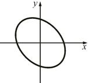
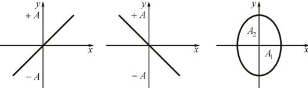

Сложение взаимно-перпендикулярных колебаний
Пусть некоторое тело колеблется и вдоль оси x, и вдоль оси y, т.е. участвует в двух взаимноперпендикулярных колебаниях:;
Найдем уравнение результирующего колебания. Для простоты примем
Разность фаз между обоими колебаниями равна:.
Чтобы получить уравнение траектории, надо исключить из этих уравнений время t. Упростим выражения, выбрав начало отсчета так, чтобы , т.е.
 ;
;
или
Распишем второе уравнение через косинус суммы:
Отсюда:
Возведем обе части в квадрат: ;.
Окончательное уравнение:
В результате мы получили уравнение эллипса, оси которого ориентированы относительно x и y произвольно
1. Начальные фазы колебаний одинаковы:
, т.е.Тогда уравнение примет вид: или
отсюда получим уравнение результирующего колебания:
Это уравнение прямой, проходящей через начало координат. Следовательно, в результате сложения двух взаимно перпендикулярных колебаний с одинаковыми начальными фазами будут происходить колебания вдоль прямой, проходящей через начало координат.
Такие колебания называются линейно поляризованными.
2. Начальная разность фаз равна π
Тогда , следовательно
Уравнение колебания в этом случае
То есть точка тоже будет колебаться вдоль прямой, проходящей через начало координат, но прямая лежит в других четвертях по сравнению с первым случаем
Амплитуда результирующего колебания в обоих случаях равна: .
3. Начальная разность фаз равна π/2
Проанализируем то же уравнение, учитывая, что ; .
Это уравнение эллипса с полуосями А1 и А2. Случай эллиптически поляризованных колебаний выше.
При получим уравнение окружности (циркулярно-поляризованные колебания).
4. Все остальные разности фаз дают эллипсы с различным углом наклона относительно осей координат.
Необходимо отметить, что все рассматриваемые случаи, все кривые – это эллипсы (даже прямая – частный случай эллипса).
Фигуры, получаемые при сложении взаимно перпендикулярных колебаний разных частот, называются фигурами Лиссажу (Ж. Лиссажу (1822–1880) – французский физик). В простейших случаях можно сравнить частоты по виду фигур.
В приведенных выше примерах рассматривались простейшие случаи, когда . Если , то в результате будут получаться уже не эллипсы, а более сложные фигуры Лиссажу. В табл. 1 приведены несколько фигур Лиссажу для разных соотношений частот колебаний и заданной разности фаз.